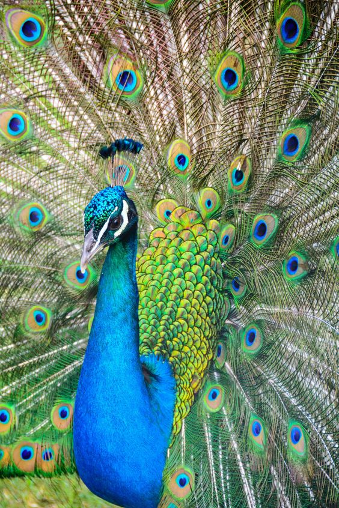

ANIMAIS SILVESTRES
O Zoológico de Guarulhos, mantém cerca de 500 animais, de 100 diferentes espécies, priorizando a fauna nacional, com 91% de espécies nativas.
ANIMAIS VIDA LIVRE
O Zoo possui uma área de mata e lagos que atraem muitas espécies de aves de vida livre, que podem ser observadas e fotografadas facilmente.
PESQUISA E CONSERVAÇÃO
O Zoo de Guarulhos desenvolve pesquisas em áreas da medicina veterinária e biologia por seu corpo técnico, e também participa de projetos de outras instituições, como programas de mestrado, doutorado e iniciação científica.
VEGETAÇÃO NATIVA
O Zoo de Guarulhos mantém uma rica vegetação com árvores exóticas e nativas que proporciona uma linda paisagem e ainda contribui com a alimentação das nossas aves.
ATIVIDADES PARA CRIANÇAS
Aqui você vai encontrar lindos desenhos para colorir, além de aprender como desenhar alguns animais e fazer dobraduras e máscaras.

O ZOOLÓGICO
O Zoológico de Guarulhos, criado em 1981, mantém cerca de 500 animais, de 100 diferentes espécies, priorizando a fauna nacional, com 91% de espécies nativas. O Zoo participa de programas de conservação de espécies ameaçadas, realiza pesquisas científicas e atividades de educação para conservação. Os animais recebem cuidados constantes, tanto preventivos como curativos, por uma equipe de biólogos, veterinários e tratadores, incumbidos da manutenção de sua saúde e bem estar.

A estrutura do zoo conta com 59 recintos de exposição, setor extra e quarentenário, que abrigam os animais residentes e animais recém-chegados e em tratamento. Há no local clínica veterinária e área de manejo, com salas de atendimento, laboratório, sala de cirurgia, área de internação e sala de necropsia, e também um setor de alimentação e biotério para produção de alimentos vivos.


OS ANIMAIS

Papagaio de peito roxo (Amazona vinacea)
Caracterizado pela coloração arroxeada do peito, este papagaio habita as florestas frias, principalmente matas de araucárias, formando grandes bandos. Antes encontrada desde a Bahia até o Rio Grande do Sul, hoje restringe-se ao sudeste e sul do Brasil. A destruição de seu habitat preferencial e a captura pelo tráfico são grandes ameaças á sobrevivência da espécie

Gato do mato pequeno (Leopardus tigrinus)
O menor felino brasileiro é um animal solitário, de hábito noturno, que habita o solo, mas é capaz de escalar árvores com facilidade, sendo encontrado em todos os biomas do Brasil. A gestação de cerca de 2 meses gera apenas um filhote. Embora possa adaptar-se a áreas modificadas pelo homem, a redução das áreas naturais ameaça a sobrevivência da espécie.

A VEGETAÇÃO
Mutum do sudeste (Crax blumenbachii)
Espécie endêmica da Mata Atlântica de baixada, passa a maior parte do tempo no solo, onde se alimenta de frutos e sementes, e se empoleira para dormir e nidificar. Atualmente é encontrado apenas em 11 localidades em Minas Gerais, Espírito Santo e Bahia, habitando matas primárias ou em avançada regeneração, sendo muito sensível à caça, alteração e fragmentação de seu habitat.


COMO CHEGAR AO ZOOLÓGICO DE GUARULHOS
Endereço: Rua Dona Gloria Pagnoncelli 344 Jardim Rosa de França – Guarulhos – São Paulo – Brasil CEP: 07081-120
Telefones: Setor técnico: (11) 2452-4523 Setor administrativo: (11) 2455-4999 Gerência: (11) 2452-4558 Educação ambiental: (11) 2455 E-mail de contato: manejo.zooguarulhos@gmail.com